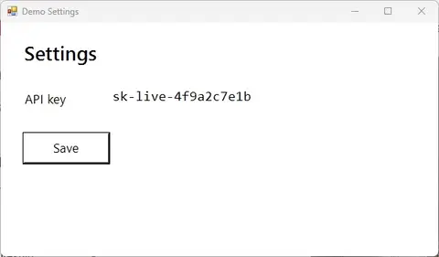

SCREENCAST-MCP / WORKFLOWS / REC 02
README demo GIF
A README gets one shot at showing what the project does. Record the feature, look over the take as one image before you spend time on it, then export an animation sized for the page. Animated WebP is usually much smaller than GIF for the same frames, and GitHub renders both.
00:00THE PROMPT
Record the Demo Settings window for about five seconds while the save runs, show me the take, and make a WebP under 3 MB for the README.
00:05THE CALLS IT MAKES
start_recording → contact_sheet → export_gif (webp). Paths are shortened; every value is from a real run.
- start_recording { "target": "window:Demo Settings", "fps": 15 }{ "sessionId": "rec-…", "matchedWindow": "Demo Settings" }
- stop_recording { "sessionId": "rec-…" }{ "durationSec": 6.53, "finalizedGracefully": true }
- contact_sheet { "input": "rec-….mp4", "mode": "scenes" }One image with a timestamped tile at each point the screen changed, returned inline for the agent (and you) to check the take.{ "frameTimes": [0, 3], "columns": 2, "rows": 1 }
- export_gif { "input": "rec-….mp4", "format": "webp", "width": 480, "maxBytes": 3000000 }{ "format": "webp", "sizeBytes": 37636, "withinBudget": true }
00:30THE OUTPUT

Reference it from the README with an ordinary image tag: . Need GIF for an older viewer? Drop format; the default budget is GitHub's 10 MB.